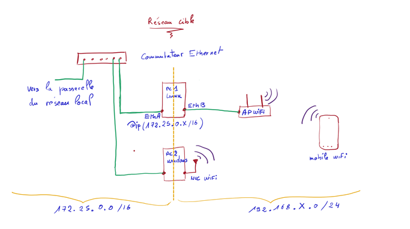

L'objectif de ce projet était de créer un réseau local connecté à Internet en appliquant les concepts vus lors des travaux dirigés. Pour cela, nous avons réalisé trois séances de trois heures de travaux pratiques en binôme. Le matériel utilisé comprenait deux ordinateurs, un point d'accès sans fil et des appareils externes tels que nos téléphones.
Mise en place d’un réseau local (LAN)

Nous avons commencé par configurer le réseau local en attribuant une adresse IP unique à chaque machine. Cette adresse définit le réseau auquel chaque appareil appartient ainsi que son identifiant au sein de ce réseau. On peut la comparer à un département, dans lequel chaque ville possède un nom unique. Après avoir configuré les adresses IP, nous avons effectué des tests de communication entre les appareils connectés pour vérifier le bon fonctionnement de l'adressage.
Une fois cette étape validée, il nous restait à connecter notre point d’accès Wi-Fi au réseau Internet. Nous avons rencontré un premier obstacle : il nous manquait un routeur, un dispositif essentiel qui permet de diriger les messages entre les réseaux, un peu comme une autoroute reliant différentes régions. Pour résoudre ce problème, nous avons découvert que les ordinateurs pouvaient fonctionner comme routeurs grâce à une commande à entrer dans le terminal. Une fois le routeur configuré et la passerelle définie sur chaque machine, nous n’étions toujours pas connectés à Internet.
Le problème venait du fait que le routeur devait connaître la route vers d'autres réseaux. Pour ce faire, il y a deux solutions : entrer manuellement les routes ou changer le mode de fonctionnement du routeur pour qu'il les détecte automatiquement. Enfin, pour valider le bon fonctionnement du projet, nous avons vérifié la connexion à Internet, par exemple en effectuant une recherche ou en envoyant un message à une machine d'un autre groupe lors des travaux pratiques.
Ce projet a renforcé ma rigueur et ma persévérance, car chaque petite erreur d’adressage ou omission d'une commande demandait de comprendre et corriger le problème.